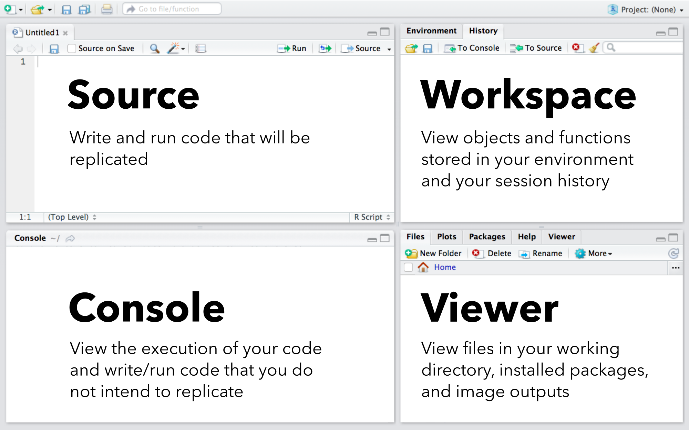

Introduction to R Studio
This document will begin to prepare you for the material presented in this course. Please read and complete the following steps. Even if you are entering this class with loads of R experience, please thoroughly read and complete each section of this document, as each section contains terminology you may be unfamiliar with and the beginnings of the R data science workflow that we will develop over the course of this class.
Throughout documents of this class there are a number of icons and formats to pay special attention to:
- Represents sections where user input is necessary.
-
Gray boxesare sections that appear exactly as they would in the R environment. You may copy-and-paste these sections directly into R (CTRL+C to copy and CTRL+V to paste). - The spy icon () provide tips and tricks for users.
- The end of each document will provide summary information on keyboard shortcuts, operators, functions, and vocabulary.
Important! Throughout this class we will be using keyboard shortcuts. Class documents refer to Windows/Linux keyboard mapping. Mac users should use “command” instead of CTRL to execute keyboard shortcuts.
R and the R Studio environment
Our first step is to ensure that you have R and R Studio Desktop installed on your computer.
- If you do not have R installed on your computer, visit this link and follow the directions to do so.
- If you do not have R Studio Desktop installed on your computer, visit this link and follow the directions to do so.
Please ensure that both programs are installed on your computer and open R Studio.
R Studio is an interface to R that has numerous advantages over using R’s built-in interface. More than anything, R Studio provides an environment that is easy to organize. R Studio is divided into four panels, as described in the image below. We will use panel names and their functionality considerably throughout this class, so please take a moment to familiarize yourself with them.

Open R Studio and create a new R script in the source panel using the keyboard combination CTRL+SHIFT+N. Even before you begin writing any code, it’s good to save the script you will be working on. Save the file on your computer using the keyboard combination CTRL+S. Name the file “rIntro” (note: the extension, “.R” will be assigned automatically).
The source panel
The source panel provides a useful interface for writing and editing scripts and is a great tool for observing and communicating what you have done. To execute code from the source panel, place your cursor on the line you would like to run and use the keyboard shortcut CTRL+Enter. To run multiple lines of code at once, use your mouse to highlight the section of code you would like to run and hit CTRL+Enter.
Type 1+1+2 on the first line of your script in the source panel. Use the keyboard shortcut CTRL+Enter to execute the line of code that the cursor is on.
Type or copy-and-paste the following into the source panel, select the section of code with your mouse, and run the section using CTRL+Enter:
1+1+2
3*5*8
You may also use your mouse and CTRL+Enter to run a subset of a line of code. Using your entry above, highlight just 5*8 with your mouse and hit CTRL+Enter to run.
Note: Make sure that you have CTRL+Enter in your muscle memory – you are going to be using it a lot!
Any code that you will use more than once or upon which future lines of code depend should always be written and executed in the source panel.
The console panel
The console panel is the R Studio interface to program R. When a line of code is run from the command prompt (the symbol >) on the console, the interface sends the code to R which evaluates it and returns any potential output. When you ran the above sections of code from the source panel, you may have noticed that the input and output appeared in the console panel. This highlights a component of how R Studio works: code written in the source panel is sent to the console panel (CTRL+Enter), the console panel sends the code to R for evaluation, and R prints the results in the console panel (if applicable).
You can run code directly from the console panel. To do so, simply type the code you would like to run and press enter.
Type 1+1+2 after the command prompt on the console panel and press enter to run.
Copy-and-paste the following into the console panel and press enter to run the section:
1+1+2
3*5*8
You can use your keyboard to navigate between lines of code you’ve run in the console panel. This can be especially useful for modifying part of a section of code. For example, use the up arrow on your keyboard to change the line 1+1+2 to 1+1+2+3.
Any code that you will use only once should be written and executed in the console panel. Do not write code into the console panel if future code elements will depend on the code’s output!
Mathematical operators are similar to that in Excel (e.g., * for multiplication and / for division). Likewise, R follows the conventional order of operations (i.e., the same order of operations you would find on a scientific calculator or in Microsoft Excel – parentheses, exponents, multiplication/division, then addition/subtraction). For example, the mathematical expression:
\[\frac{1+1+2}{3} + \frac{5}{8}\]
Would be written in R as:
(1+1+2)/3+5/8 If you are new to R, please take a moment to explore using R as a calculator.
The workspace panel
When you open R you initiate an R session. An R session is defined by all of the code that you have run and any objects that you’ve stored in the global environment. The global environment is a temporary storage location for all of the objects and functions that you create in an R working session. The workspace panel is where you can view your global environment and your session history. In addition to viewing, you can use this panel to save or clean your session history and objects in your global environment. Using these tools can help streamline your R workflow and aid in replication.
Click on the “History” tab of the workspace panel to view the commands that you have run so far.
Click on the save icon on the history tab of the workspace panel. Save your history as “migBirds” (the file type will be added automatically). We will build on this file over the course of this class.
Click on the broom icon on the history tab of the workspace panel. This will remove everything you’ve done in R since your session began.
Note: The workspace panel contains tools for a number of other tasks, including tools for importing and exporting data and executing code. We will not be using most of these features in this class but you may want to explore them to determine whether you’d like to integrate them into your workflow.
Be aware of how many objects are stored in your global environment. You can manage these objects on the “Environment” tab of the workspace panel. To limit the amount of data stored in memory and make best use of the workspace panel, be sure to remove unecessary objects.
The viewer panel
There is a lot going on in the viewer panel, but basically it provides tools for viewing anything other than command line output. The tabs on this panel include:
- Files: A file manager window. This shows the files located in your working directory, which is the folder on your computer that R is reading from and writing to.
- Plots: Any plots that you create can be viewed here.
- Packages: R libraries that have been installed onto your system.
- Help: Help files that provide in-depth information into any R function that you will use.
- Viewer: Images and maps can be viewed here.
Note: The viewer panel contains tools for a number of other tasks, including tools for loading and installing libraries and managing files. We will not be using most of these features in this class but you may want to explore them to determine whether you’d like to integrate them into your workflow.
The assignment operator
In R, it is often useful to save objects in your global environment by assigning a name to them. Assignment allows you to recall saved objects by typing the name rather than recreating the object. This is often necessary, as objects can be quite complex.
Type hello world into the console panel and hit CTRL+Enter.
You should have received the error message: Error: unexpected symbol in "hello world". If you aren’t already, you will soon become super annoyed by messages like these. So what did you do wrong? When you type a word without quotes (which can be single or double), R thinks you are calling an object from your environment. The object was undefined, so it produced an error.
Repeat the above, this time typing either 'hello world' or "hello world" and running the line.
Now lets define our object. We’ll make an object called helloWorld using R’s assignment operator <-. Enter or copy-and-paste the following into the source panel and execute using CTRL+Enter:
helloWorld <-
'hello world'You will notice there is no output in the console. If you look at the workspace panel, however, you will see that your global environment now contains a “Value” with the name helloWorld.
Type helloWorld into the console panel and notice the printed output.
Enter or copy-and-paste the following into the source panel and execute using CTRL+Enter:
simpleAddition <-
1 + 1 + 2
You have just created an object with the value of 1+1+2 and the name simpleAddition. You can use the name as a representation of the object.
Explore the results of the object that you created by typing the following in the console panel:
simpleAddition * 4
simpleAddition + 2
simpleAddition / 3Note: If you are new to R, you probably have yet to grasp how powerful assignments are. As most users begin to develop their R skillset, the number of assignments they use grows. What began as a useful tool can end up leading to an addiction that causes messy, hard-to-read scripts. In this course you will learn how to use assignments effectively and avoid the confusion that over-assignment causes.
Do not use assignments unless you have to. Two key rules are:
-
Only define an object if you truly want to use it in the future. We probably wouldn’t really want to assign a name to
1+1+2in the real world. - Make sure to explore the object prior to assigning a name to it. Assigning a name before testing an object can lead to headaches and unseen errors in your code.
Being careful with your naming conventions is very important! There are a lot of conventions out there for naming objects. The most important thing to avoid is naming an object and forgetting what you named it. The workspace panel can help you remember names (if you keep it clean), but the best practice is to use a consistent naming convention. Best management practices for naming objects include:
- Avoid using all caps and unnecessary capitalization. When misused, capitalization leads to extra keystrokes without conveying additional information.
-
Be careful when using punctuation to separate words as it may convey meanings that you may not intend. For example, assigning the name
hello.worldshould be avoided because we should reserve the use of.to specify file types. When using punctuation to separate words, use_. For example you may assign the namehello_worldto an object. - Do use camel case! Camel case provides a clear distinction between words while avoiding too many keystrokes or symbols that convey meaning. Camel case is used in multi-word labels in which the first word is all lowercase and the first letter of any additional words is uppercase. For example, camel case would be written as camelCase.
-
Do not assign names to multiple versions of the same object. For example
helloWorld1andhelloWorld2. - Never, never, never, never include spaces in names!
Commenting out script: #comment!
Good coding practices in most languages means adding plenty of descriptive content so you (and others) know what the script is doing at each point. This is known as adding comments or commenting your script. Comments act as a rudder by making your scripts easy to communicate to others, adding structure to scripts, and helping you to retrace your steps when necessary. In R, you add a comment using #. R will not evaluate any part of a line that follows a hashtag.
Try running the following from the source panel and observe what happens:
# Adding a comment
1+1+2 # Adding a commentIt is good to add a comment before steps in a code that describes what happens. Make sure that the comments you’ve added truly describe the process. Your comment should be able to provide a description of what a section of code is doing that outside observers can comprehend.
Add comments to the lines of code from the previous section:
# Practicing simple math and adding assignments:
simpleAddition <-
1 + 1 + 2
# Practicing adding an assignment to a computer-nerd phrase:
helloWorld <-
'hello world'Script writing is like any other type of writing in that it is best to take your target audience into consideration when commenting a script. If you are new to R or writing code for someone who is just starting out, your script should be full of comments that explain every potentially confusing process. As you develop your R skills, or are communicating to more advanced R users, you will likely need less commenting. We will cover best management practices in commenting scripts considerably throughout this course.
The function
Functions are what data-wrangling-guru Hadley Wickham calls the “fundamental building block of R”. Functions are a special type of R object that allow you to conduct often lengthy evaluations with limited work. The R environment contains many functions for data management, graphical display, and statistical analysis. To run a function, you type the name of the function followed by a set of parentheses enclosing what you want your function to evaluate.
Combine the integers 1, 1, and 2 into a single object (the combine function in R is c) in the source panel and name the object firstSet:
# Combine values:
firstSet <-
c(1, 1, 2)
Before you use a function it is often necessary to get a good sense of how it works. The “Help” tab of the viewer panel provides in-depth resources on each function. To access the help file for a given function simply type ? followed by the name of the function in the console panel.
Functions can be used to explore, modify, or create objects as well as define how R interacts with your computer’s file system. The functions below can be used to get the working directory R reads to and write from, list the files in that folder, and change the working directly to some other folder on your computer:
# Retrieve the location of your working directory:
getwd()
# List the files in your current working directory:
list.files()
# Change your working directory (modify the code below to a folder in your file system):
setwd('C:/Users/...')Nested functions
Functions can be nested inside other functions. In other words, you can run a function inside another function. This can avoid making unnecessary assignments. To understand nested functions, it is important to recall that the name of an object is just a simplified way to call the object it describes.
Enter firstSet and c(1,1,2) in the console panel (separately) and note the output for each. Because firstSet IS c(1,1,2), the assigned name and the object are interchangeable.
In the source panel, enter and run the following line of code to make a second set of numbers with the name secondSet:
secondSet <-
c(3, 5, 8)To explore nested functions, run the code below in the console panel, noting the nested and non-nested versions of the function and their output:
# Non-nested combination of the number sets:
c(firstSet, secondSet)
# Combinations of the number sets using nested functions:
c(
c(1, 1, 2),
secondSet
)
c(
firstSet,
c(3, 5, 8)
)
c(
c(1, 1, 2),
c(3, 5, 8)
)Arguments in functions
Many functions contain arguments in addition to the object you are evaluating. These arguments modify the behavior of the function (Note: Some arguments are necessary while some are optional). For example, the function mean contains an argument na.rm that tells R whether you want to remove NA (data Not Available) prior to running the function.
In the source panel, make an object with two integers and an NA and assign the name twoValuesWithNA to the object. In the console panel, calculate the mean of the data with (na.rm = TRUE) and without (na.rm = FALSE) the modifier argument:
twoValuesWithNA <-
c(1, 2, NA)
mean(
twoValuesWithNA,
na.rm = FALSE
)
mean(
twoValuesWithNA,
na.rm = TRUE
)Libraries of functions
Base R is a set of functions that are preloaded when you downloaded R. Many functions are available in base R but there are loads of functions that have been written by others and assembled into libraries (also called packages) that you can download. These user-built libraries are very powerful and can automate many of the tasks you confront when coding. To download a library, you use the function install.packages. This function evaluates the name of a library, in quotation marks and installs the library on your computer. Note: Each package will only be loaded once, therefore this process should be completed in the console panel.
Install two libraries that we will use throughout the course of this class:
install.packages('tidyverse')
install.packages('RCurl')
Once a library is installed on your computer, it is almost ready to use, but not quite. You have to load the library into your environment using the function library. Installed libraries are defined objects therefore quotes are not necessary when loading them. Note: This function needs to be run each time a new R session is initiated. Because future lines of code may be dependent on the library or libraries loaded, loading should always occur in the source panel.
Load the tidyverse and RCurl libraries:
# Load libraries:
library(tidyverse)
library(RCurl)Libraries should always be loaded in the source panel! It’s best to load libraries in one of three locations:
- At the top of the script
- On a separate source script
- Within a user-created function
Warning! In the early stages of learning R, or even later if you have not spent much time learning the language, you will find yourself falling into what I call the “library trap”. The library trap works like this:
- You need to manipulate your data in some way that you are unfamiliar with
- You visit Google or Stack overflow and, reading through the answers, find sets of libraries that do what you want
- You install and load the library and potentially move past the issue
Why is this a problem? Some of the libraries you stumble on will be critical to your current and future workflows. Most of the libraries found in this way will not. This turns scripts into a sloppy patchwork of libraries. It can make code very confusing to follow and lead to unseen errors (if the function does not do exactly what you perceive). If the issue can be solved with Base R or the packages you are currently working with, it will make your code more clear, help you avoid problems, and save you time in the future. In this class we will teach you a workflow to examine and remedy R problems using a core set of packages.
Term review and glossary
Functions and operators
-
cCombine objects -
getwdprint the location of your current working directory -
install.packagesAdd a new library to a user’s computer -
libraryAdd a new library to a user’s current R session -
list.filesprint the files names that are located in your current working directory -
meanTake the average of a set of values (note, use na.rm = TRUE in the presence of NA’s) -
setwdSet a new location for your working directory -
<-Assign a name to an object in R (assignment operator)
Keyboard shortcuts
- CTRL+C: Copy
- CTRL+V: Paste
- CTRL+S: Save file
- CTRL+Shift+N: New R script
- CTRL+Enter: Execute line or section of code from the source panel
Vocabulary
- Argument: Condition that modifies the behavior of a function
- Assign: Provide a name for an R object
- Camel case: A convention of writing in which multiple words are joined without spaces and all words following the initial word are capitalized. forExampleThisIsCamelCase.
- Code: Any text written in the source or console panel
-
Comment: Use a
#to communicate to R that the subsequent section of code will not be evaluated - Console panel: A panel of R Studio used to execute code and writing/running code that users do not intend to replicate
- Function: Commands that can be used to execute complex or repetitive tasks
- Global environment: A storage container that provides a reference point for all available objects in the current session
- Library: A set of community-generated functions (note: Also called a package)
- Nested function: A function that is run inside of another function
- Object: One of many types of data stored in the R environment, such as individual values, functions, tables, lists, and images
- Package: A set of community-generated functions (note: Also called a library)
- R session: Time spent and operations conducted since opening R (note: sessions may be saved and loaded to avoid lost work)
- Script: A file that contains all code for a set of operations
- Session history: All lines of code that have been sent to R since the beginning of a session (or since the session history was last cleared)
- Source panel: A panel of R Studio used for writing, editing, and running scripts
- Viewer panel: A panel of R Studio used for navigating your system’s files, viewing help files, and image/plot output (and more)
- Working directory: The location on your computer from which R reads or writes files
- Workspace panel: A panel of R Studio used to view/manage objects in your global environment and your session history